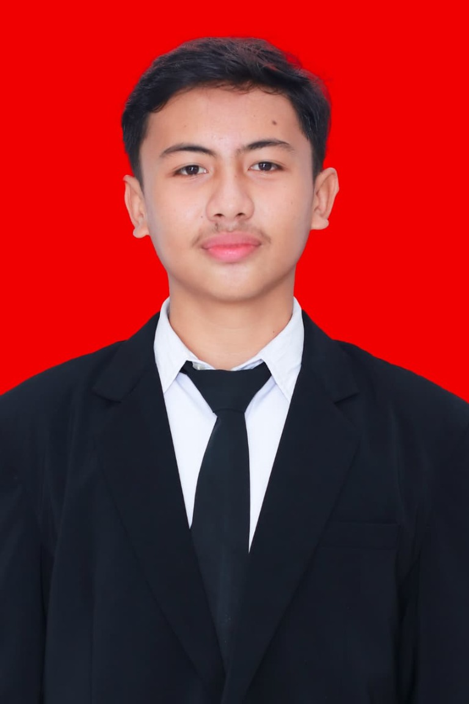

PENDIDIKAN
MAN 1 POSO
Pendidikan menengah atas
PORTOFOLIO PROFESIONAL
Mahasiswa Informatika
PROFIL SAYA
Mahasiswa dengan semangat tinggi untuk berkembang di dunia akademis dan bidang IT. Memiliki latar belakang pendidikan di Madrasah Aliyah (MAN 1 POSO) serta motivasi kuat untuk terus belajar, beradaptasi, dan mengasah keterampilan teknologi.
Aktif berkontribusi dalam kegiatan akademik dan organisasi, serta terbuka terhadap pengalaman baru di luar perkuliahan—termasuk pengembangan teknologi dan sistem IoT.

Informatika PembelajarLATAR BELAKANG
PENDIDIKAN
Pendidikan menengah atas
KEAHLIAN
Pengalaman berorganisasi dan kepanitiaan, serta mengembangkan kemampuan memimpin dan bekerja dalam tim.
KARYA & PENGEMBANGAN
Aplikasi web untuk memantau ketersediaan lahan parkir di beberapa titik kampus secara real-time.
Website toko online untuk menampilkan produk dan membantu pelanggan menjelajahi katalog Toko Anugrah.
Kunjungi Toko AnugrahEksplorasi sensor parkir cerdas berbasis IoT, serta pengembangan struktur data dan basis data relasional.
TERBUKA UNTUK PELUANG
Terbuka untuk peluang magang, proyek kolaborasi, maupun diskusi seputar pengembangan teknologi dan organisasi.